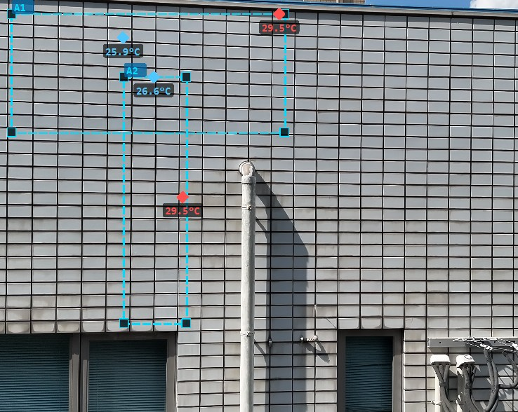
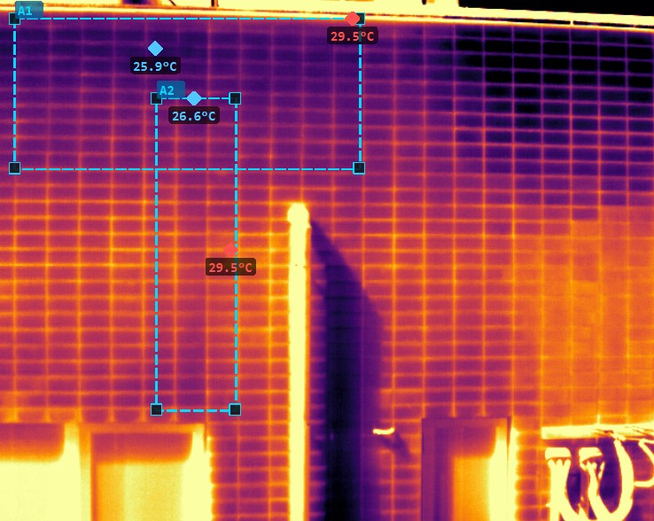

飛ばすか、飛ばさないか。風や天候が危ないときは「今日は飛ばさない」と決める勇気も持って、安全を第一にします。
天候や現場の状況が変わっても、すぐに計画を立て直し、調査に合った条件で飛行します。
許可の確認、周辺への周知、関係者との調整を、こちらから先に進めます。お客さまの手間を減らします。
撮影した熱画像を一枚ずつ確かめ、最後の報告書まで手を抜かずに仕上げます。
そして LINK。空からの調査と、お客さまの建物の管理をつなぎます。
一等無人航空機操縦士と二等無人航空機操縦士の国家資格を持つ操縦士が、自ら飛ばします。
赤外線建物診断技能師として、撮影した熱画像を読み解き、劣化の疑いがある場所を報告書にまとめます。
国土交通省の飛行許可・承認（包括申請、飛行経路は日本全国）を取得しています。お急ぎの案件にも対応しやすい体制です。
建物の管理をする方、工事をする方、発電所を運営する方を支えます。
マンションやビルの外壁タイルやモルタルの浮きを、熱画像で調べます。足場を組まずに、建物全体を短期間で確認できます。
屋根に上らずに、瓦のずれ、板金の浮き、雨どいの詰まりなどを撮影します。塗装会社やリフォーム会社の見積もり用の撮影もお受けします。
パネルの温度の異常（ホットスポット）を赤外線カメラで見つけます。発電量の低下や故障の早期発見に役立ちます。
工事の進み具合の記録、施設や敷地の全景、災害のあとの被害状況の確認など。点検や工事の管理に役立つ写真と動画を撮影します。


GRIT-LINKが撮影し、解析した外壁の画像です。範囲を決めて温度を測り、温度の差から劣化の疑いがある場所を探します。
建築基準法第12条に基づく定期報告では、外壁の全面調査に、ドローンを使った赤外線調査も使えることが国土交通省のガイドラインで示されています。
※ 定期報告書の作成と提出は、建築士などの資格者が行います。GRIT-LINKは撮影と解析を担当し、資格者の方と連携して進めます。
※ 赤外線調査は、天候や外壁の向き、時間帯の影響を受けます。調査に適した日を選んで実施します。
建物の大きさや場所、条件によって変わります。まずはお気軽にお見積りをご依頼ください。
| サービス | 内容 | 料金（税込） |
|---|---|---|
| 外壁の赤外線調査 | 撮影、熱画像の解析、報告書の作成 | 1㎡あたり 350円〜 （最低料金 150,000円） |
| 屋根・建物の点検 | 撮影（写真20〜40枚）、簡易報告書（戸建て住宅） | 20,000円〜 |
| 太陽光パネルの点検（住宅用） | 赤外線撮影、異常箇所の報告書（10kW未満） | 30,000円〜 |
| 太陽光パネルの点検（産業用） | 赤外線撮影、異常箇所の報告書（10kW以上） | 60,000円〜 |
| 空撮 | 写真または動画の撮影、半日（3〜4時間）まで（編集は別料金） | 50,000円〜 |
※ 別途交通費をいただく場合もあります。※ 天候による延期の場合、追加料金はいただきません。
メールで、場所と内容をお知らせください。
必要に応じて現地を確認し、お見積りをお出しします。
飛行計画を作り、許可や周辺への周知を整えます。
天候を見ながら、安全を第一に飛行します。
写真やデータ、報告書をお渡しします。
福岡県内を中心に、九州圏内へ伺います。飛行許可は日本全国が対象のため、九州の外の案件もご相談ください（交通費を別途いただきます）。
安全と調査の精度のため、雨の日や風の強い日は飛行しません。日程を変更し、追加の料金はいただきません。
多くの場合、取得済みの飛行許可の範囲で対応できます。場所によっては追加の手続きや、関係者との調整が必要なことがあります。まずは場所をお知らせください。
赤外線調査は、外壁の浮きなどの疑いがある場所を見つけるのに適した方法ですが、天候や外壁の材料、向きによって検出の精度が変わります。必要に応じて、打診調査などとの組み合わせをご提案します。
納品したデータは、お客さまの事業で自由にお使いいただけます。GRIT-LINKの実績として紹介する場合は、事前に許可をいただきます。
| 屋号 | GRIT-LINK（グリットリンク） |
|---|---|
| 代表 | 松木場 文彦 |
| 所在地 | 福岡県行橋市 |
| 事業内容 | ドローンによる建物の赤外線調査、屋根・太陽光パネルの点検、空撮 |
| 対応エリア | 福岡県内を中心に九州圏内（全国対応可） |
ご相談やお見積りは無料です。お気軽にご連絡ください。